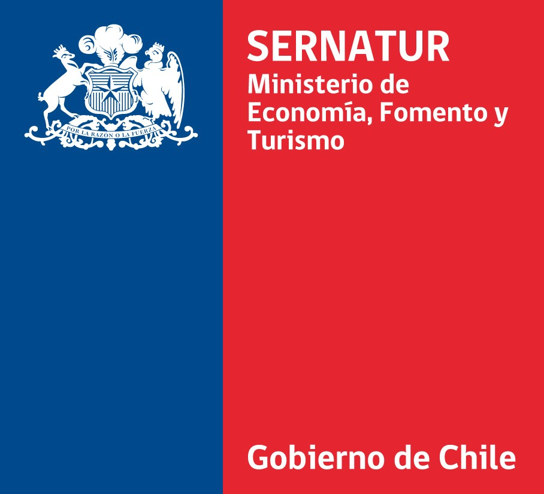

Transparencia territorial
Conoce el plan de acción de tu ZOIT
Accede a las acciones, mapas, gobernanza y documentos disponibles para cada territorio.

San José de Maipo
Consulta el plan de acción, sus responsables, la cobertura territorial y la gobernanza disponible para la ZOIT San José de Maipo.
Consultar portal →ZOITPirque
Consulta las acciones, la cobertura territorial y la gobernanza propuesta para consolidar un destino sustentable e innovador.
Consultar portal →ZOITIsla de Maipo
Explora las acciones, la cobertura territorial y la gobernanza propuesta para un desarrollo turístico sostenible e inclusivo.
Consultar portal →Información pública
Tres territorios, una consulta clara
Las Zonas de Interés Turístico son territorios con condiciones especiales para la actividad turística que requieren conservación y planificación integrada.
La administración está alojada fuera de GitHub Pages y protegida con autenticación. Los cambios se publican aquí solamente después de revisar sus fuentes y generar una nueva versión.